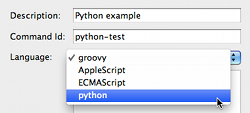

Table of Contents
Artur Hefczyc <artur.hefczyc@tigase.net> v2.0, June 2014: Reformatted for AsciiDoc. :toc: :numbered: :website: http://tigase.net :Date: 2010-01-06 20:22
Looking in the last poll it is clear that the most people are mainly interested in Python support in the Tigase server. As I mentioned in one of previous articles, Tigase virtually supports any scripting language as long as there is JSR-223 support for that language.
This article describes how to get Python working as a scripting language for ad-hoc commands in the Tigase server. The first part is installation, and the second shows a few code examples with explanation of the differences between Python usage and some other languages.
Please note, I am not a Python developer, and by no means this is Python development guide. In fact I know very little Python. All the code examples are used only to present the API available and there are certainly better ways to do it in the proper Python style. If you have any suggestions or have a better code examples I am happy to include them in the guide.
In short, the installation is extremely simple. Just copy the file attached to this article to your Tigase installation, to the libs/ directory. Restart the server and… here it is. You can write and execute Python scripts inside the Tigase server right away.
And here it is, the full description.
In theory the Tigase offers scripting support defined in JSR-223. You can use any language for which there is such support for JVM. This includes also stand-alone python implementations and the JSR-223 plugins acts just as a bridge. This, however, does not make much sense as you are not able to interact with JVM code (Tigase API). Therefore you need a language which is executed within JVM and can easily exchange data between the main application (Tigase server) and the script.

The best way to go is to use Jython implementation. It works very well within JVM and what is very important it perfectly integrates with the Tigase server. I have tested the Tigase server with Jython-2.2.1 and can confirm it works fine. I, however, recommend version Jython-2.5.1 and all the examples are executed with this version installed. Please note, Jython-2.5.0 does not work at all. Both supported versions can be downloaded from the Jython website.
Version 2.5.1 is a bit simpler to install. When you download and run the Jython installer, you have to find jython.jar file in the directory where you installed Jython. Just copy the file to the Tigase’s libs/ directory and all is ready to go. Please note, this is the same file as the one attached to this article for your convenience.
Version 2.2.1 needs a little bit more work. The first part is the same. It is not, however enough to copy the jython.jar file. One more file is necessary for the Jython to work with the Tigase server. You have to install JSR-223 engine separately. JSR-223 engines binary file can be downloaded from Java scripting project website. The binary file has to be unpacked and jython-engine.jar file needs to be copied to the Tigase libs/ directory.
The best way to check if the Jython is installed correctly and support for Python is enabled is by trying to submit a new script to the Tigase server. Browser the server service discovery, select "Session manager" component and run "Execute command" function. A new window should show with a list of all available ad-hoc commands. Select "New command script" item and click "Execute". Ad-hoc command dialog windows should show up. One of the field is "Language" with pull down list of available scripting languages. If "python" is on the list it means everything is ok and support for Python is enabled.
